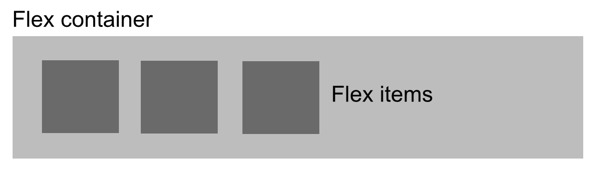
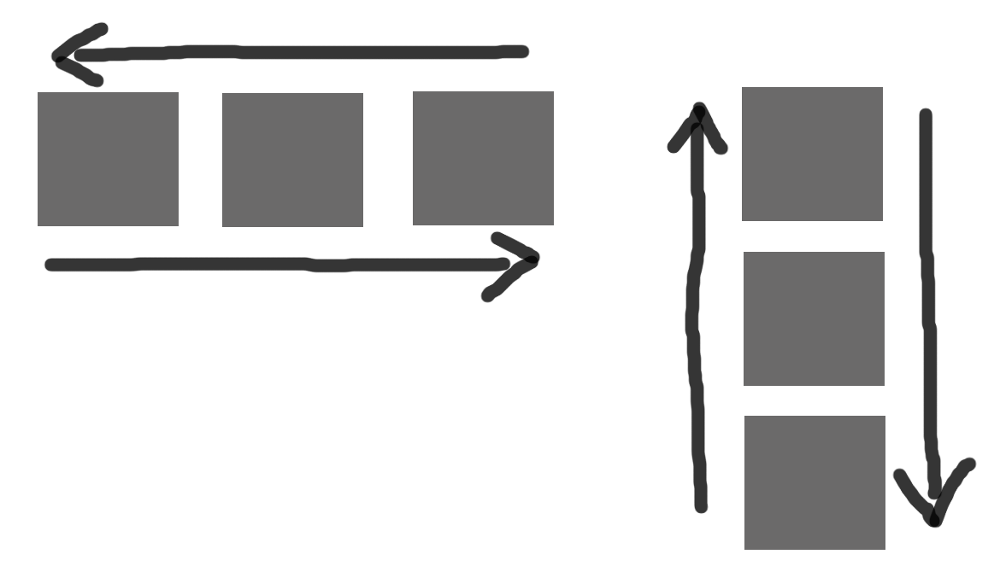
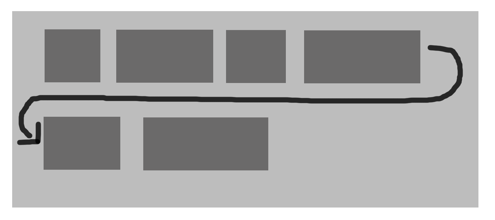
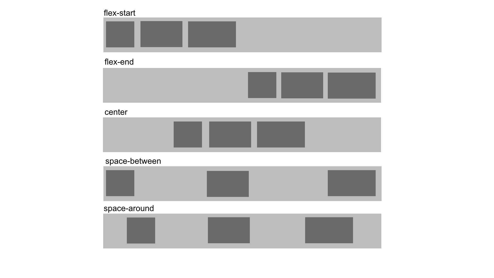
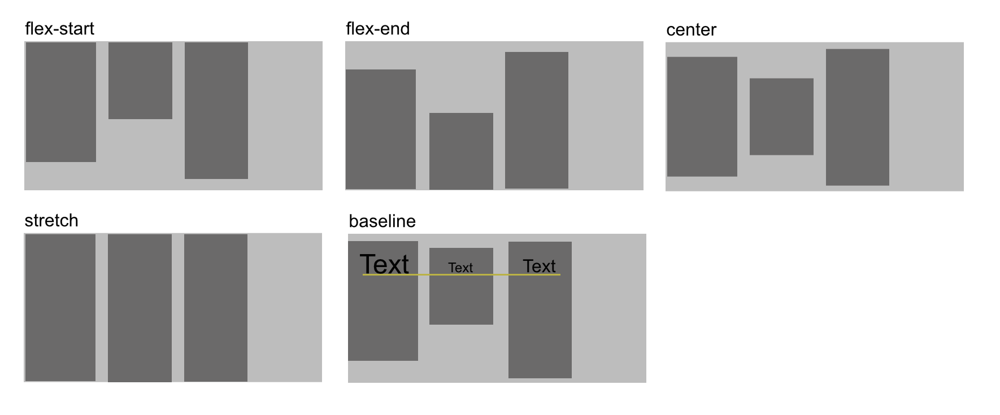
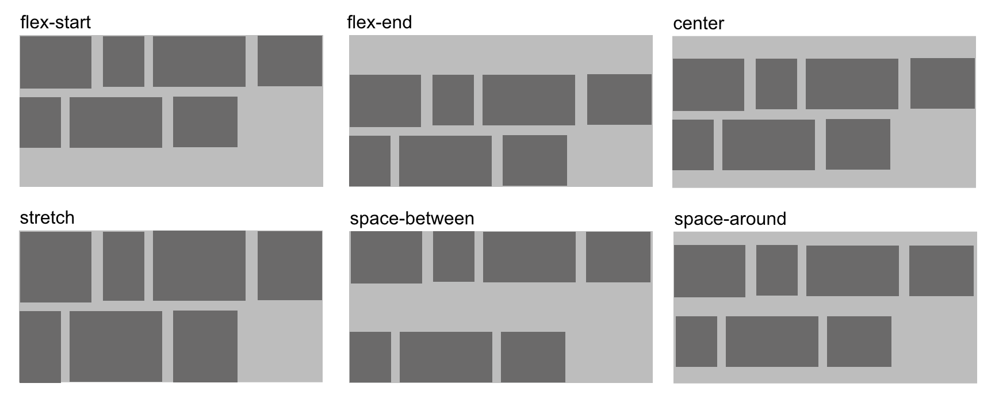
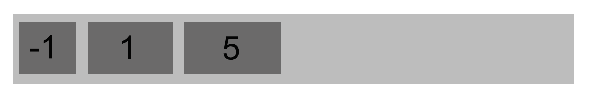
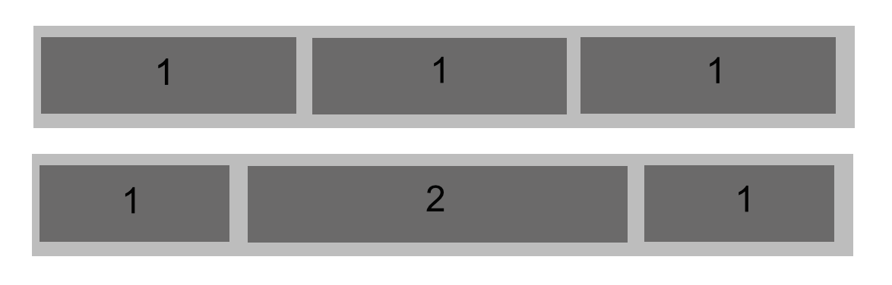

CSS3 Grid & Flexbox
Next generation layouts
PottJS 19.03.2015
Christoph Reinartz / @pistenprinz / trivago GmbH
about me
- UX Engineer
- trivago GmbH
- Tech & Team Lead UI
- @pistenprinz
Layouting in CSS

Layout modes in css
- block & float
- inline layout
- inline-block
- table layout
- positioned layout
CSS3 Layout Modules
- Multi-column Layout
- Flexible Box Layout (flexbox)
- CSS Grid Layout
- CSS Exclusions
- CSS Shapes
- CSS Regions
Layouting in CSS

u no this?
.float-container {
float: left;
width: 100%;
background-color: #aaa;
}
.a, .b, .c {
width: 33.33333%;
float: left;
box-sizing: border-box;
}
A
One sentence.
B
A medium amount of text, but still nothing really interesting to read here. I promise.
C
Yummy ipsum lorem kitten, bacon and mushroom. Rainbows rainbows pigeon wereunicorn app surprise, kittens pegasus delight unicorn wereunicorn rainbows. Pigeon unicorn surprise pony pigeon wereunicorn app app.
layouting in css

block & float
Most common layout mode today. Used in many frameworks and grid layouts, e.g. bootstrap
it is a hack - clearfix
.cf:before,
.cf:after {
content: " "; /* 1 */
display: table; /* 2 */
}
.cf:after {
clear: both;
}
/**
* For IE 6/7 only
* Include this rule to trigger hasLayout and contain floats.
*/
.cf {
*zoom: 1;
}
inline-block
the 4px "bug"
nav a {
display: inline-block;
background: #ccc;
}
but wait...
there are hacks for that
- remove spaces between elements
- negative margins
- skip closing tag
- set font-size to zero
table layout
table layout for the rescue?!
even support IE8!
we need to change stack order of elements in RWD
table layout - responsive
Box One
Box Two
Box Three
Box Four
.boxes {
display: table;
margin: 0 auto;
}
.box {
display: table-cell;
width: 25%;
height: 15em;
text-align: center;
line-height: 15em;
color: #fff;
}
.one { background: #333; }
.two {
background:#fff;
color:#333;
}
.three { background:#aaa; }
.four { background:#dc002e; }
table layout - responsive
/* 768px */
@media only screen and (max-width:48em) {
.boxes {
display:table;
width:100%;
}
.box {
display:block;
width:100%;
}
.three { display:table-caption; }
.four { display:table-header-group; }
.one { display:table-footer-group; }
}
table layout - responsive
WTF

positioned layout

positioned layout
designed for positioning elements without much interaction with other elements!
fixed & absolute: elements are taken off from flow
GSS - Grid stylesheets
wanna really rely on javascript for layouting?
shouldn't the browser do the layout?!
A new hope
CSS3 flexbox
CSS grid
CSS Grid
The grid property in CSS is the foundation of Grid Layout. It aims at fixing issues with older layout techniques like float and inline-block, which both have issues and weren't really designed for page layout.
CSS Grid
- first public draft april 2011
- proposal developed my microsoft
- early implementation in IE10
defining a grid
.container {
display: grid;
}
to start using a grid, define a grid on the container
defining a grid
A
B
C
D
.grid-wrapper {
display: grid;
grid-template-columns: 100px 10px 100px;
grid-template-rows: auto 10px auto;
}
line base placement
.g-a {
grid-column-start: 1;
grid-column-end: 2;
grid-row-start: 1;
grid-row-end: 2;
}
.g-d {
grid-column-start: 3;
grid-column-end: 4;
grid-row-start: 3;
grid-row-end: 4;
}
shorthands
.content {
.grid-column: 3 /4;
.grid-row: 2 / 3;
}
declare start and end values shorthanded
grid-area
.content {
.grid-area: 2 / 3 / 3 / 4;
}
declare row-start, col-start, row-end and col-end
line base placement
span keyword
.g1-b {
grid-column: 3;
grid-row: 1 / span 3;
}
line base placement
named lines with span
.grid-wrapper-1 {
display: grid;
grid-template-columns: (col) 100px (gutter) 10px (col) 100px (gutter) 10px;
grid-template-rows: (row) auto (gutter) 10px (row) auto (gutter) 10px;
}
.g1-b {
grid-column: col 2;
grid-row: row / span gutter 2;
}
the repeat / auto keyword
.grid-wrapper-1 {
display: grid;
grid-template-columns: repeat(2, (col) 100px (gutter) 10px) ;
grid-template-rows: repeat(auto, (row) auto (gutter) 10px );
}
Defining Grid Areas
.header {
grid-area: header;
}
.grid-wrapper-2 {
display: grid;
grid-template-columns: 100px 10px 100px 10px 100px;
grid-template-rows: auto;
grid-template-areas: "header header header header header"
"sidebar . content content content";
}
Add Media Queries
@media only screen and (min-width: 400px) and (max-width: 540px) {
.wrapper {
grid-template-columns: 20% 5% auto;
grid-template-areas: "header header header"
"sidebar . content"
"sidebar2 sidebar2 sidebar2"
"footer footer footer";
}
}
@media only screen and (min-width: 540px) {
.wrapper {
grid-template-columns: 100px 20px auto 20px 100px;
grid-template-areas: "header header header header header"
"sidebar . content . sidebar2"
"footer footer footer footer footer";
}
}
What else?
- Source Independence
- Layering Items
- Grid Area as a new positioning context
- Grid Auto Flow: Row vs. Column
- 1fr Unit - one "fractional unit"
CSS3 flexbox
The Flexbox Layout (Flexible Box) module (currently a W3C Last Call Working Draft) aims at providing a more efficient way to lay out, align and distribute space among items in a container, even when their size is unknown and/or dynamic (thus the word "flex").
CSS3 flexbox
Note: Flexbox layout is most appropriate to the components of an application, and small-scale layouts, while the Grid layout is intended for larger scale layouts.
CSS3 flexbox
see it in production...
the flexbox concept
the flex container has the ability to alter its items to best fill the available space
the flexbox concept
the flexbox layout is direction-agnostic opposed to the regular layouts
flex container
.container {
display: flex;
}
defining a flex container. all children are flex-items
container & items

container: flex-direction
.container {
flex-direction: row | row-reverse | column | column-reverse;
}
This establishes the main-axis, thus defining the direction flex items are placed in the flex container.
flex-direction

container: flex-wrap
.container{
flex-wrap: nowrap | wrap | wrap-reverse;
}
By default, flex items will all try to fit onto one line. You can change that and allow the items to wrap as needed with this property
flex-wrap

container: flex-flow
flex-flow: <‘flex-direction’> || <‘flex-wrap’>
This is a shorthand flex-direction and flex-wrap
container: justify-content
.container {
justify-content: flex-start | flex-end | center | space-between | space-around;
}
This defines the alignment along the main axis.
justify-content

container: align-items
.container {
align-items: flex-start | flex-end | center | baseline | stretch;
}
This defines the default behaviour for how flex items are laid out along the cross axis on the current line.
align-items

container: align-content
.container {
align-content: flex-start | flex-end | center | space-between | space-around | stretch;
}
This aligns a flex container's lines within when there is extra space in the cross-axis, similar to how justify-content aligns individual items within the main-axis.
align-content

flex-items
order
.item {
order: integer;
}
By default, flex items are laid out in the source order. However, the order property controls the order in which they appear in the flex container.
order

flex-grow
.item {
flex-grow: number; /* default 0 */
}
This defines the ability for a flex item to grow if necessary.
flew-grow

flex-shrink
.item {
flex-shrink: number; /* default 1 */
}
This defines the ability for a flex item to shrink if necessary.
flex-basis
.item {
flex-basis: length | auto; /* default auto */
}
This defines the default size of an element before the remaining space is distributed.
flex
.item {
flex: none | [ <'flex-grow'> <'flex-shrink'>? || <'flex-basis'> ]
}
This is the shorthand for flex-grow, flex-shrink and flex-basis combined.
align-self
.item {
align-self: auto | flex-start | flex-end | center | baseline | stretch;
}
This allows the default alignment (or the one specified by align-items) to be overridden for individual flex items.
vendor prefixes
.container {
display: flex;
flex-wrap: wrap;
}
.item {
flex: 0 1 auto;
}
vendor prefixes
.container {
display: -webkit-box;
display: -webkit-flex;
display: -ms-flexbox;
display: flex;
-webkit-flex-wrap: wrap;
-ms-flex-wrap: wrap;
flex-wrap: wrap;
}
.item {
-webkit-box-flex: 0;
-webkit-flex: 0 1 auto;
-ms-flex: 0 1 auto;
flex: 0 1 auto;
}
WTF

Sass / Autoprefixer
write a mixin
@mixin order($val) {
-webkit-box-ordinal-group: $val;
-moz-box-ordinal-group: $val;
-ms-flex-order: $val;
-webkit-order: $val;
order: $val;
}
or use autoprefixer
Photo-Sources
Slide 1:
https://www.flickr.com/photos/adactio/2889002644
Slide 3:
https://imgur.com/gallery/Q3cUg29
Slide 6:
https://pbs.twimg.com/media/B2mW8NiCQAA6IIP.jpg
Slide 8:
http://imgur.com/gallery/2LxSZxE
Slide 17:
http://imgur.com/gallery/YkuovuP
Slide 18:
http://cdn.meme.am/instances/500x/59141167.jpg
Slide 69:
http://cdn.meme.am/instances/500x/51253042.jpg